AI-enabled OpenEdge Memory Profiler
OpenEdge is an application development platform used by over 100k+ companies globally.
When existing OpenEdge users attempted to migrate their application code to OpenEdge v12, they encountered numerous memory-related issues. Despite their efforts, they struggled to identify the root causes of these problems. As a result, they submitted support tickets seeking assistance in resolving the issues. However, even our support engineers faced challenges in addressing these problems due to the lack of a suitable tool for profiling OpenEdge memory. This limitation hindered their ability to diagnose and resolve the memory issues effectively.
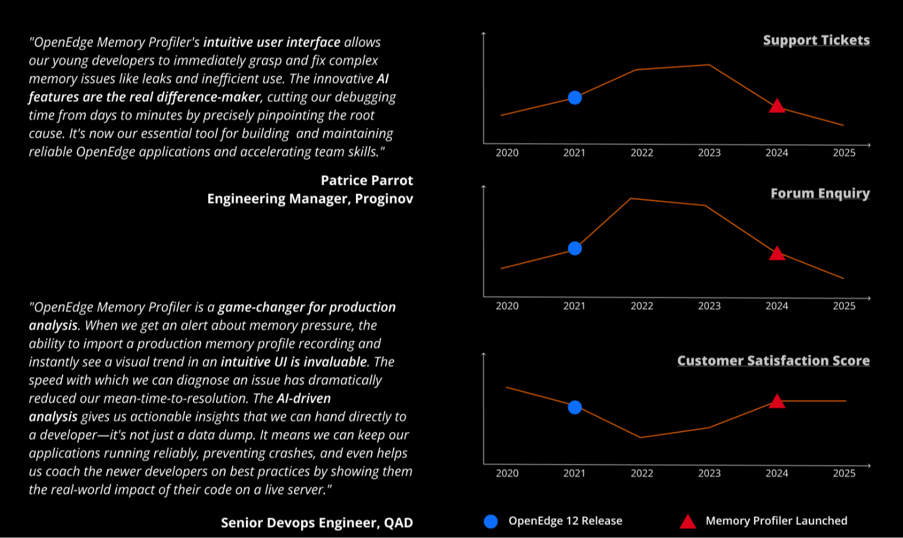
User Research (early phase)
To better understand the challenges our users and support engineers faced, we held discussions with both groups. Initially, we thought providing users with memory snapshot data would help them identify and fix issues. However, when asked for feedback, most customers suggested that having the data in JSON format would make it easier for them to analyze and resolve their problems more effectively.
Memory Profiler v1
Memory Profiler v1 was just a command line tool that when enabled started profiling the OpenEdge Virtual Machine's memory consumption and exported the data to a file.
Issues
The adoption of version 1 was limited, with only a small number of users. Unfortunately, this did not lead to a reduction in support tickets, and our support engineers continued to struggle with extracting useful insights from the generated files. The files were large in size, which caused difficulties for third-party data analysis tools to load and process them efficiently. Additionally, the memory profiler was configured to capture a memory snapshot every 100 milliseconds, which contributed to the file size and complexity.
The limited adoption of Memory Profiler Version 1 highlighted that simply providing raw data was insufficient to address the problem. It became clear that our customers require a more comprehensive memory profiler tool that not only collects data but also assists them in analyzing and identifying memory issues effectively.
Analysing Popular Profiler Tools
As part of our research, we explored several popular profilers to gather inspiration. YourKit, a well-regarded Java profiler, was recommended by members of our engineering team. Additionally, we examined Pyroscope, a Y Combinator-funded profiler company recently acquired by Grafana, whose user interface impressed us. We also investigated Google Cloud and AWS profilers.
Each of these profilers serves distinct purposes. Cloud profilers are optimized for handling massive scale, while tools like the Chrome profiler are tailored for front-end development. Throughout our exploration, we remained mindful of the differences between these profilers and our specific use case, ensuring that any insights we gained would be relevant and applicable to our needs.
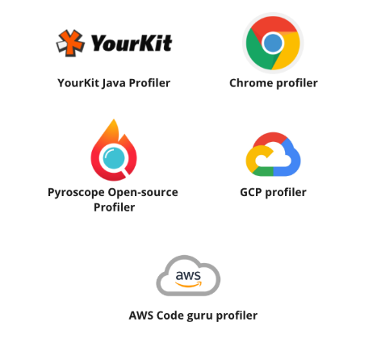
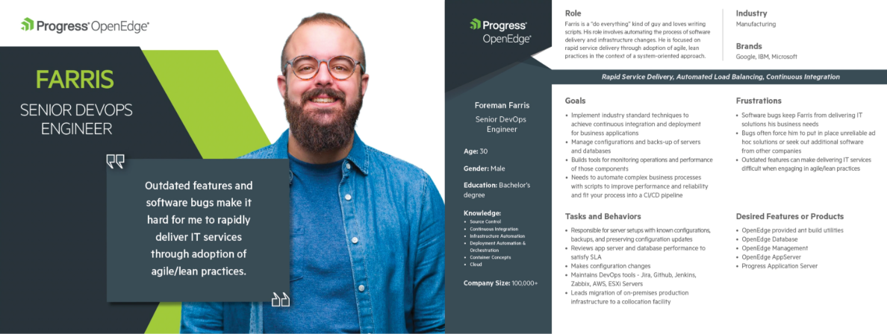
Brainstormed with veteran engineers who have been in the organization for some time and have a sense of what issues our customers are facing.
Interviewed eight customers with over a million lines of OpenEdge code in production. Reviewed early designs with them and continuously iterated to improve them.
"It is challenging to isolate memory leaks."
"Memory leaks have a significant global impact on production as it takes the system down."
"It is time-consuming and challenging to keep track of particular objects that are not garbage collected, like temp-table objects."
"A big issue is that sometimes it is almost impossible to determine where that object was created/born in the code and why it still exists."
"Handling clean up when dealing with datasets and temp-tables gets complex due to the different ways they are used — almost passed by reference, value has been initialized or not, is it static or dynamic. Some edge cases are always left out that then result in leaks."
"It is not possible to get reliable profiling information in a GC .NET environment (CPU and memory)."
"We don't know how much memory is being used by the application and what is using that memory."
"We have no good way of knowing the memory requirements to run a version of our application."
"We had issues with memory leaks in the past. It took months of time to resolve them, due to which we adopted the practice to delete each object created as we don't trust garbage collection."
"It's hard to distinguish why an object is not garbage collected — is it because a variable, or an object, still references somewhere."
"Deploying on the cloud eats extra resources they are using due to leaks or ineffective code — an additional hosting cost for them."
"Understanding memory use is good for making better design decisions."
"Doing live profiling of an application running on a production server would be nice to have. Being able to collect profiling data at the production server and analyze it later on the developer machine would be very useful."
"Our focus is to reduce resource requirements of their application to be cloud-ready."
"We want the ability to collect profiling information in the production environment, as the load, data, and hardware specifications are different in production, and analyze it in the profiler tool."
"We need to track the time spent in processing a request in the server."
Memory Profiler Frontend Tool MVP
Presented Memory Profiler designs at the Progress User Group conference with our Software Architect in Prague, Czech Republic, and received valuable feedback.
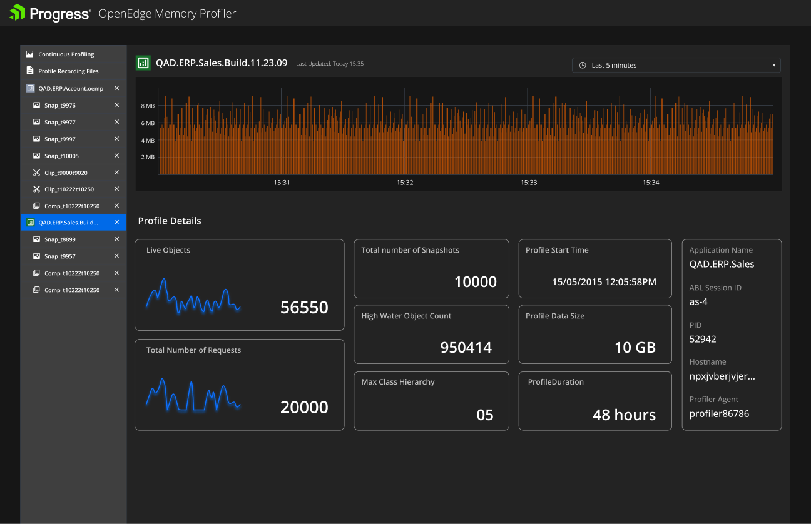
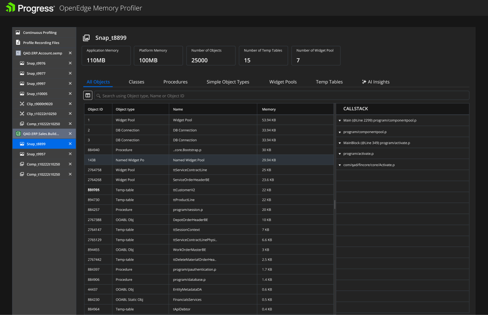
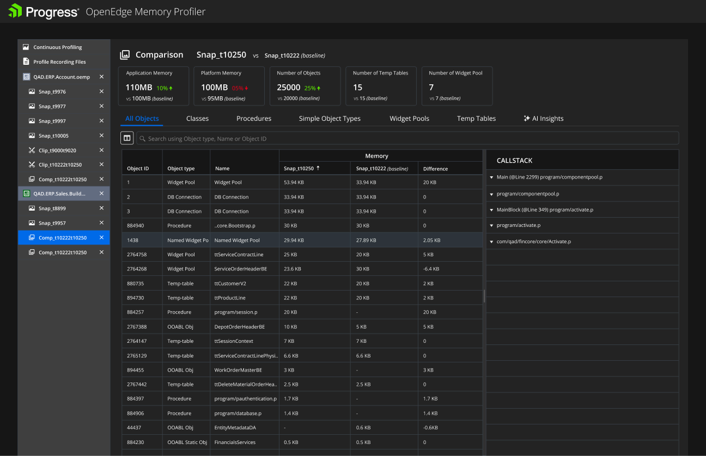
User Research for AI incorporation
We wanted to understand how well developers can understand the profiler data, find memory bottlenecks, and find possible solutions.
We conducted the research through our community (CVP) website. We sent the same memory recording file to 25+ developers and asked them to use the tool to find memory issues.
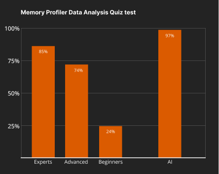
Based on experience and role, we divided the users into Expert, Advanced, & Beginners. We had about 20% Expert developers, 35% Advanced developers, and the rest beginners.
We later quizzed all participants on their analysis. It was reviewed by OpenEdge Senior Architects.
We also asked the same question to an AI. We tested with the following prompt.
Interpret this memory recording for me and answer the following three questions.
— Root Cause: Why is this happening?
— Recommended Fix: How can we resolve it?
These initial results at least point towards a great opportunity in adding value to most users by incorporating Artificial Intelligence (AI).
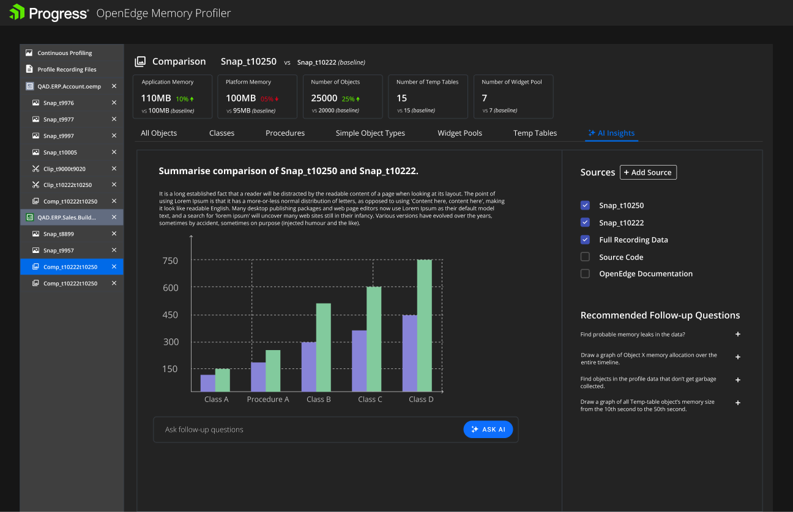
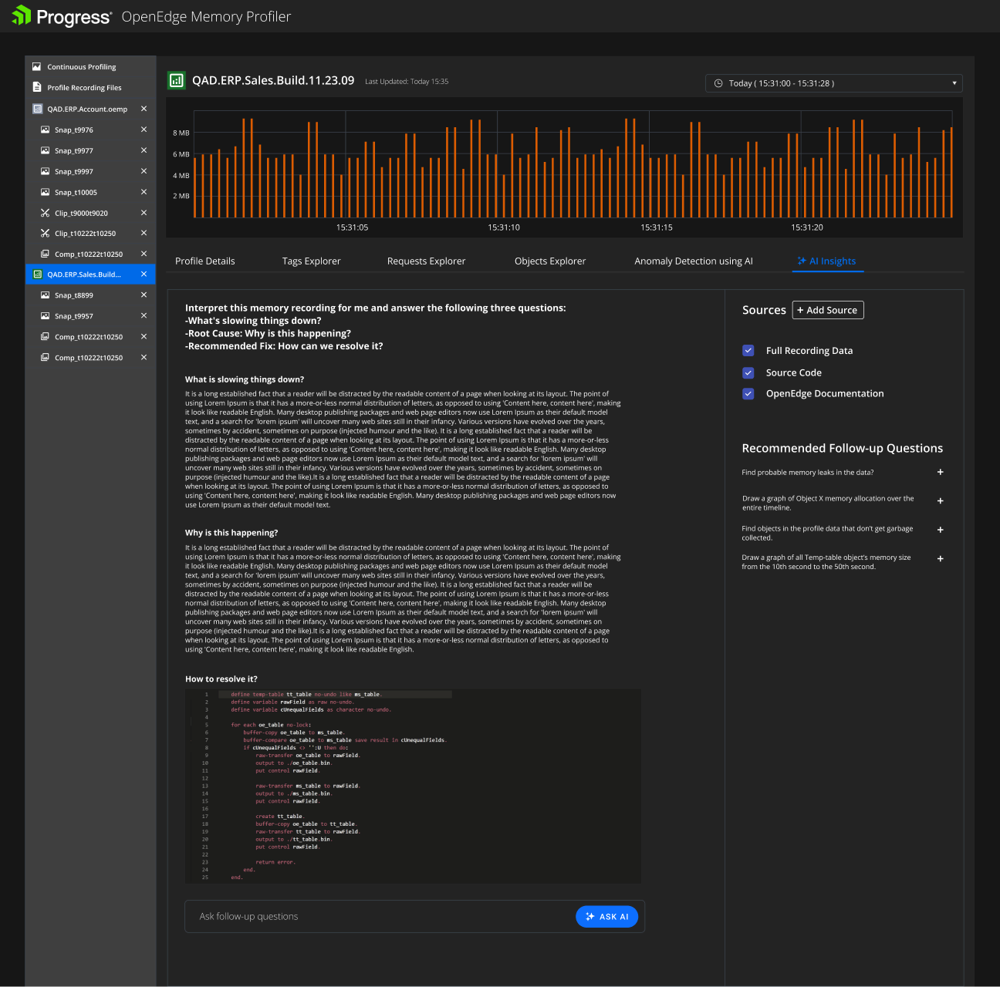
A memory leak occurs when a program allocates memory but fails to release it after use, leading to a gradual depletion of available memory. This issue can be particularly challenging to detect, as leaks often grow slowly over time and do not immediately disrupt application behavior. They may only become evident when the system starts to exhibit performance degradation or crashes unexpectedly, making them elusive during standard testing. In production environments, undetected memory leaks can lead to severe consequences, such as system downtime, increased server costs, or even complete application failure. Identifying the source of a memory leak requires expertise and the use of specialized tools like profilers or memory analysis utilities, as tracing the exact point where memory is not freed can be complex, especially in large codebases or dynamic execution paths.
Our users needed better tools to spot memory leaks. Just comparing snapshots was not a good enough solution. After brainstorming and talking to many customers we provided a few more features that help users spot memory leaks.
Tags Explorer
Developers can strategically embed tags within their code to track specific areas of interest. Those tags are then reflected in snapshot data, which can be plotted over time to identify slow-growing memory leaks. The development of this feature was directly influenced by valuable feedback gathered during one-on-one interactions between our senior architect and customers at developer conferences. These interactions provided crucial insights into the needs of our users, leading to the implementation of this powerful diagnostic tool.
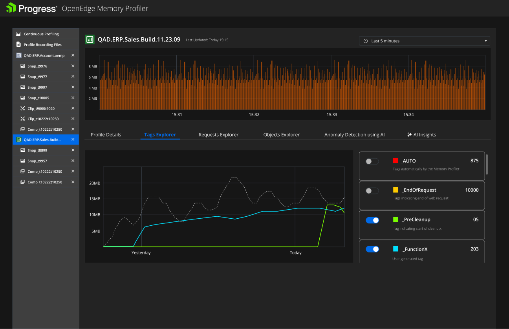
Requests Explorer
In the presence of a memory leak, memory consumption typically increases from the start to the end of a request. Responding to strong customer demand, we have introduced a feature that provides a list of requests and their corresponding start request snapshot link and end request snapshot link.
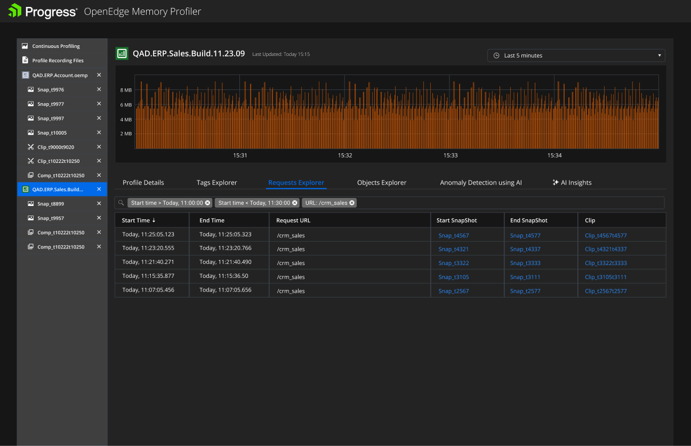
Objects Explorer
To pinpoint memory leaks, developers typically monitor an object's memory usage over time. Objects showing a consistent upward trend in memory consumption are prime candidates for leaks. Additionally, we've developed an advanced automatic memory leak detection algorithm that systematically analyzes all objects to identify those that exhibit sustained growth patterns, streamlining the identification process.
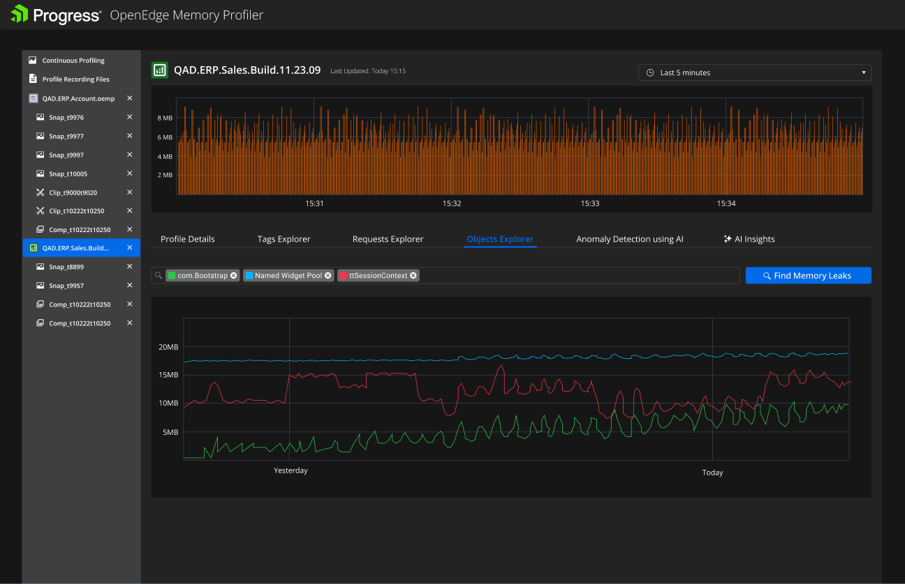
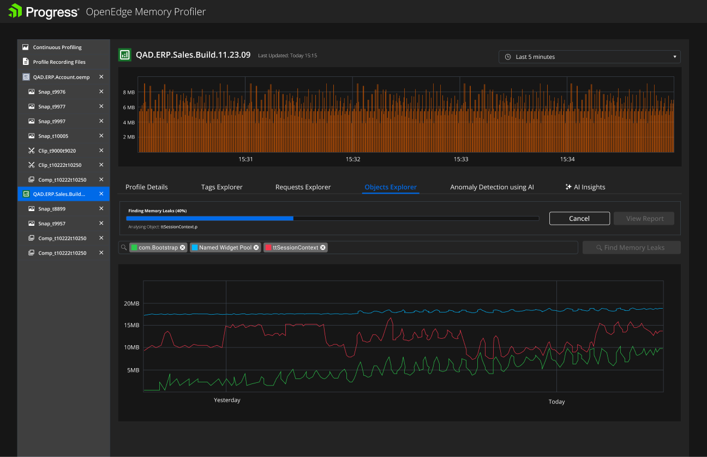
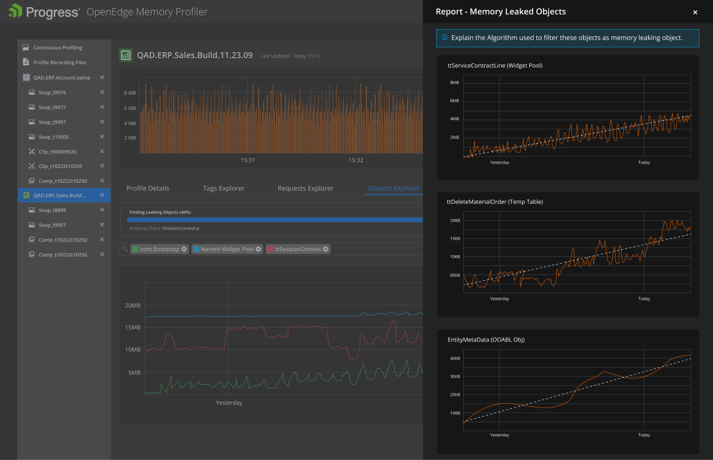
The AI-enabled Memory Profiler has proven to be a transformative tool for enhancing developer productivity and customer satisfaction. By providing intuitive insights into memory usage, this technology has empowered coders to effectively address memory-related issues, which subsequently enables customer queries more efficiently. The impact is evident in a 50% reduction in support calls, indicating improved user satisfaction and reduced support burdens. Furthermore, the profiler has contributed to increased adoption of the latest OpenEdge 12+ version, as developers can now leverage its advanced features. Overall, this innovative solution has not only streamlined development processes but also elevated the overall user experience.